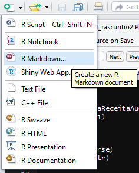
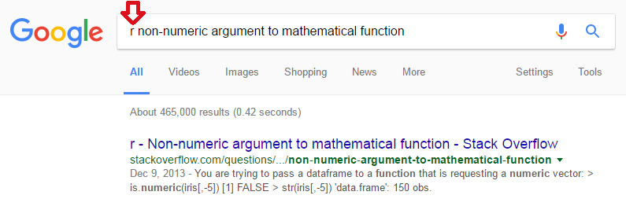
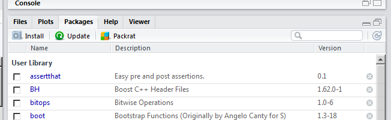
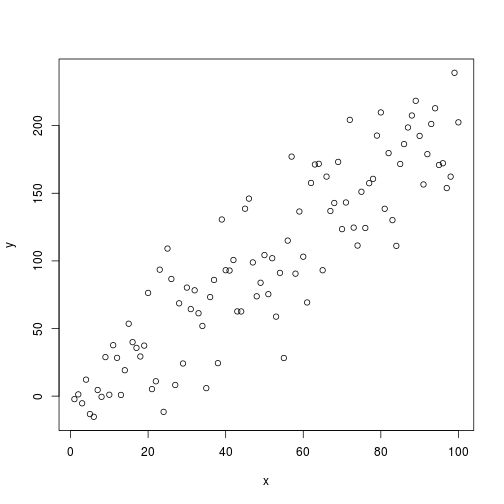
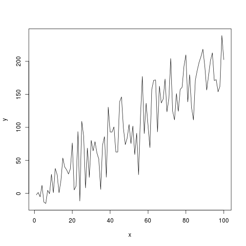
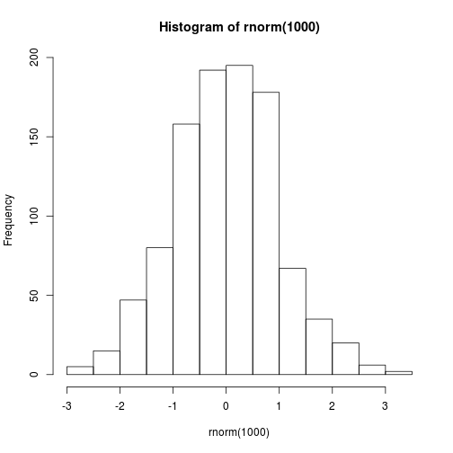
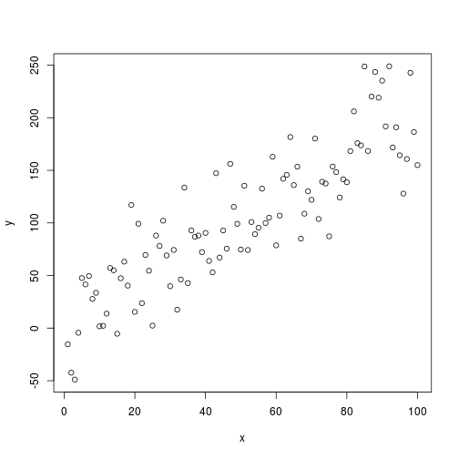
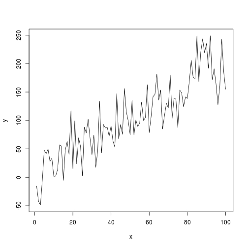

Introdução
Introdução
A linguagem R é intuitiva. Muita coisa sai do jeito certo no chute! Para ver um exemplo disso, é interessante começar fazendo do R uma grande calculadora.
Mas antes disso, vamos aprender a mexer no RStudio!
RStudio
O RStudio é o melhor ambiente de desenvolvimento de R disponível. Você pode baixá-lo aqui.
Muitas das ferramentas são aprendidas conforme o uso, e há bons materiais sobre o Rstudio na internet (por exemplo, esta página). Uma funcionalidade importante é a criação de projetos. Uma estrutura sugerida para a organização de um projeto é:
Estrutura 1. Por extensão de arquivo.
nome_do_projeto/
- .Rprofile # códigos para rodar assim que abrir o projeto
- R/ # Código R, organizado com a-carrega.R, b-prepara bd.R, c-vis.R, d-modela, ...
- RData/ # Dados em formato .RData
- csv/ # Dados em .csv
- png/ # gráficos em PNG
- nome_do_projeto.Rproj
Estrutura 2. Típico projeto de análise estatística.
project/
- README.Rmd # Descrição do pacote
- set-up.R # Pacotes etc
- R/ # Código R, organizado com 0-load.R, 1-tidy.R, 2-vis.R, ...
- data/ # Dados (estruturados ou não)
- figures/ # gráficos (pode ficar dentro de output/)
- output/ # Relatórios em .Rmd, .tex etc
- project.Rproj
Estrutura 3. Pacote do R (avançado).
project/
- README.md # Descrição do pacote
- DESCRIPTION # Metadados estruturados do pacote e dependências
- NAMESPACE # importações e exportações do pacote
- vignettes/ # Relatórios em .Rmd
- R/ # Funções do R
- data/ # Dados estruturados (tidy data)
- data-raw/ # Dados não estruturados e arqs 0-load.R, 1-tidy.R, 2-vis.R, ...
- project.Rproj
Ao abrir o RStudio, você verá 4 quadrantes. Observe a figura abaixo.

Esses quadrantes representam o editor, o console, o environment e o output. Eles vêm nesta ordem, e depois você pode organizá-los da forma que preferir. O R vive no quadrante console!
RMarkdown
O RMarkdown é um tipo de documento especial que contém tanto textos quanto códigos de R, tudo escrito em um mesmo lugar.
O markdown nada mais é do que um documento de texto com alguns padrões básicos de formatação, como negrito, itálico, títulos, subtítulos, itens e referências cruzadas. Já os chunks são pedaços de códigos em R encapsulados por três crases (```). Os códigos são executados sempre que o documento é processado.
## ```{r}
##
## isto é um chunk.
## ```
Nota
Este site foi escrito em RMarkdown. Toda vez que aparecer exemplos de código de R é porque havia um chunk no .Rmd original.
Para produção de relatórios, o RMarkdown possui algumas vantagens, como:
- Simplicidade e foco. Permite ao usuário o foco na análise e não na formatação do documento.
- Versátil. Pode ser utilizado para gerar documentos em $\LaTeX$,
Word,HTMLe apresentações embeamer,pptxeHTML(de vários tipos). Pode ainda gerar sites, livros, dissertações de mestrado e até mesmo dashboards interativos. - Reprodutível. O RMarkdown nada mais é que um arquivo de texto. Além disso, ele tenta te obrigar a fazer o documento mais autocontido possível. Assim, um documento
.Rmdé fácil de compartilhar e de ser utilizado pelo receptor. Lembre-se, o receptor pode ser o futuro você! Vale enfatizar que a reprodutibilidade é considerada como um dos princípios fundamentais da ciência. Então, só de usar RMarkdown, você já está colaborando com a ciência. :) - Flexível. É possível configurar e criar templates de análises para quaisquer tipos de aplicações e clientes. Os textos podem ser parametrizados por números que variam de versão para versão, mensalmente, por exemplo, tudo escrito somente em R.
Criar um RMarkdown novo no RStudio é fácil. Clique no botão de criar arquivo e selecione RMarkdown.
knitr::include_graphics("figures/criar_rmarkdown.png")

Para detalhes sobre como utilizar o RMarkdown, leia aqui e aqui.
R como calculadora
Pelo console, é possível executar qualquer comando do R.
1:30
## [1] 1 2 3 4 5 6 7 8 9 10 11 12 13 14 15 16 17 18 19 20 21 22 23
## [24] 24 25 26 27 28 29 30
Esse comando é uma forma simplificada de criar um vetor de inteiros de 1 a 30. Os números que aparecem entre colchetes ([1] e [24]) indicam o índice do primeiro elemento impresso nessa linha.
Quando compilamos?
Quem vem de linguagens como o C ou Java espera que seja necessário compilar o código em texto para o código de máquinas (geralmente um código binário). No R, isso não é necessário. O R é uma linguagem de programação dinâmica que interpreta o seu código enquanto você o executa.
Tente jogar no console 2 * 2 - (4 + 4) / 2. Pronto! Com essa simples expressão você já é capaz de imaginar (certeiramente) como pedir ao R para fazer qualquer tipo de operação aritmética. Lição aprendida!
Além do mais, as operações e suas precedências são mantidas como na matemática, ou seja, divisão e multiplicação são calculadas antes da adição e subtração. E os parênteses nunca são demais!
Agora que você já conhece o RStudio, digite a expressão 2 * 2 - (4 + 4) / 2 no
console e tecle Enter. Uma outra forma de chamar uma expressão é escrever
o código no editor e teclar Ctrl + Enter ou Ctrl + R. Assim, o comando é enviado para o console, onde é diretamente executado.
Se você digitar um comando incompleto, como 5 +, e apertar Enter, o R mostrará um +, o que não tem nada a ver com somar alguma coisa. Isso significa que o R está esperando que você complete o seu comando. Termine o seu comando ou aperte Esc para recomeçar.
> 5 -
+
+ 5
[1] 0
Se você digitar um comando que o R não reconhece, ele retornará uma mensagem de erro. NÃO ENTRE EM PÂNICO! Ele só está avisando que não conseguiu interpretar o comando. Você pode digitar outro comando normalmente em seguida.
> 5 % 5
Error: unexpected input in "5 % 5"
> 5 - 5
[1] 0
Pedindo Ajuda
No R, há quatro principais entidades para se pedir ajuda:
- Help/documentação do R (comandos
help(nome_da_funcao)ou?nome_da_funcao) - Stack Overflow
- Coleguinha
A busca por ajuda é feita preferencialmente, mas não necessariamente, na ordem acima.
Documentação do R
A documentação do R serve para você aprender a usar uma determinada função.
?mean
help(mean)
Cinco dicas:
- Os exemplos no final são particularmente úteis.
- Atente-se na seção Usage para ter noção de como usar.
- Os parâmetros estão descritos em Arguments. Identifique quais tipos de objetos eles recebem.
- Caso essa função não atenda às suas necessidades, a seção See Also sugere funções relacionadas.
- Alguns pacotes possuem tutorias de uso mais completos. Esses textos são chamados de
vignettese podem ser acessados com a funçãovignette(package = 'nomeDoPacote'). Por exemplo,vignette(package = 'dplyr'). Depois de ver a lista de artigos, escolha um nome e rodevignette(topic = 'nome', package = 'nomeDoPacote'). Por exemplo,vignette(topic = 'introduction', package = 'dplyr').
Há uma comunidade gigantesca de usuários de R gerando diariamente uma infinidade de conteúdos e discussões. Não raramente, você irá encontrar discussões sobre o seu problema simplesmente jogando o copiar/colar do seu erro no Google. Essa deve ser sua primeira tentativa!
Exemplo (repare no ‘r’ adicionado na busca, também ajuda):
log("5")
## Error in log("5"): non-numeric argument to mathematical function

Stack Overflow
O Stack Overflow e o Stack Overflow em Português são sites de Pergunta e Resposta amplamente utilizados por todas as linguagens de programação, e R é uma delas. Nos EUA, chegam até a usar a reputação dos usuários como diferencial no currículo!
Provavelmente, o Google lhe indicará uma página deles quando você estiver procurando ajuda. E quando todas as fontes possíveis de ajuda falharem, o Stack Overflow lhe dará o espaço para criar sua própria pergunta.
Um ponto importante: como fazer uma boa pergunta no Stack Overflow?
No site, tem um tutorial com uma lista de boas práticas, que se encontra aqui. Algumas dicas são
- ser conciso;
- ser específico;
- ter mente aberta; e
- ser gentil.
Porém, no caso do R, há outro requisito que vai aumentar muito sua chance de ter uma boa resposta: exemplinho minimal e reprodutível.
Ser minimal: usar bancos de dados menores e utilizar pedaços de códigos apenas suficientes para gerar o seu problema. Não precisa de banco de dados de um milhão de linhas e nem colocar o seu código inteiro para mostrar seu problema.
Ser reprodutível: o seu código deve rodar fora da sua máquina. Se você não fornecer uma versão do seu problema que rode (ou que imite seu erro), as pessoas vão logo desistir de te ajudar. Por isso, nunca coloque bancos de dados que só você tem acesso. Use bancos de dados que já vem no R ou disponibilize um exemplo (possivelmente anonimizado) em
.csvna web para baixar. E se precisar utilizar funções diferentes, coloque aslibrary’s correspondentes.
Instalar pacotes
O grande trunfo do R são seus pacotes. Assim, fique bastante à vontade para instalar e atualizar muitos e muitos pacotes ao longo da sua experiência com o R.
Existem três principais maneiras de instalar pacotes. Em ordem de frequência, são:
- Via CRAN (Comprehensive R Archive Network):
install.packages("magrittr"). - Via Github:
devtools::install_github("rstudio/shiny"). - Via arquivo .zip/.tar.gz:
install.packages("C:/caminho/pacote.zip", repos = NULL).
Via CRAN
Instale pacotes que não estão na sua biblioteca usando a função install.packages("nome_do_pacote"). Por exemplo:
install.packages("magrittr")
E, de agora em diante, basta carregar o pacote com library(magrittr). Não precisa mais instalar.
Dica!
Escreva `nome_do_pacote::nome_da_funcao()` se quiser usar apenas uma função de um determinado pacote. O operador `::` serve para isso. Essa forma também é útil quando se tem duas funções com o mesmo nome, e precisamos garantir que o código vá usar a função do pacote correto.
Via Github
Desenvolvedores costumam disponibilizar a última versão de seus pacotes no Github, e alguns deles sequer estão no CRAN. Mesmo assim ainda é possível utilizá-los instalando diretamente pelo github. O comando é igualmente simples:
devtools::install_github("rstudio/shiny")
Apenas será necessário o username e o nome do repositório. No exemplo, o username foi “rstudio” e o pacote foi “shiny”.
Não se preocupe! Os pacotes disponibilizados no github geralmente têm um README cuja primeira instrução é sobre a instalação. Se não tiver, provavelmente este pacote não te merece! =)
Via arquivo .zip/.tar.gz
Se você precisar instalar um pacote que está zipado no seu computador (ou em algum servidor), utilize o seguinte comando:
install.packages("C:/caminho/para/o/arquivo/zipapo/pacote.zip", repos = NULL)
É semelhante a instalar pacotes via CRAN, com a diferença que agora o nome do pacote é o caminho inteiro até o arquivo. O parâmetro repos = NULL informa que estamos instalando a partir da máquina local.
A aba Packages do RStudio também ajuda a administrar os seus pacotes.

Controles de Fluxo
Como toda boa linguagem de programação, o R possui estruturas de if’s, else’s, for’s, while’s etc. Esses controles de fluxo são importantes na hora de programar.
IF e ELSE
O seguinte trecho de código só será executado se o objeto x for igual a 1.
x <- 2
if(x == 1) {
print("oi")
}
x <- 1
if(x == 1) {
print("oi")
}
## [1] "oi"
O R só vai executar o que está na expressão dentro das chaves {} se o que estiver dentro dos parênteses () retornar TRUE.
A sintaxe com o else e o if else é
if(<condição1>) {
} else if (<condição2>) {
} else if (<condição3>) {
} else {
}
Diferença entre SQL e R nas comparações lógicas
Igualdade no SQL é só um sinal de igual: <2 = 1. No R são dois: 2 == 1.
Diferença O teste de diferente no R é != ao invés de de <>.
Negação ao invés de usar a palavra "not" igual ao SQL, usamos !. Por exemplo, "entidade_id not in ('100515')" fica "!entidade_id %in% c('100515')".
for
Sintaxe do for:
for(contador in 1:5){
# várias coisas...
print(contador)
}
## [1] 1
## [1] 2
## [1] 3
## [1] 4
## [1] 5
Outro exemplo:
vetor <- 30:35
indices <- seq_along(vetor)
for(i in indices){
print(vetor[1:i] / 2)
}
## [1] 15
## [1] 15.0 15.5
## [1] 15.0 15.5 16.0
## [1] 15.0 15.5 16.0 16.5
## [1] 15.0 15.5 16.0 16.5 17.0
## [1] 15.0 15.5 16.0 16.5 17.0 17.5
No trecho de código acima, preste atenção no resultado individual de cada uma das operações para entender como o R funciona.
Objetos
a <- 1
a
## [1] 1
O R te permite salvar dados dentro de um objeto.
No exemplo acima, salvamos o valor 1 em a, e sempre que o R encontrar o nome a ele vai substituir por 1.
Atenção!
O R entende letras maiúsculas e minúsculas, isto é a é considerado um objeto diferente de A.
Objetos atômicos
Existem cinco classes básicas ou “atômicas” no R:
- character
"UAH!"(é o varchar do SQL) - numeric
0.95(números reais) - integer
100515(inteiros) - complex
2 + 5i(números complexos, a + bi) - logical
TRUE(booleanos, TRUE/FALSE)
Vetores
Vetores no R são os objetos mais simples que podem guardar objetos atômicos.
vetor <- c(1, 2, 3, 4)
class(vetor)
## [1] "numeric"
De forma bastante intuitiva, você pode fazer operações com vetores.
vetor - 1
## [1] 0 1 2 3
Quando você faz vetor - 1, o R subtrai 1 de cada um dos elementos do vetor. O mesmo acontece quando você faz qualquer operação aritmética com vetores no R. Tente jogar o código abaixo no console.
vetor / 2
vetor * 10
Você também pode fazer operações que envolvem mais de um vetor:
vetor * vetor
## [1] 1 4 9 16
Neste caso, o R irá alinhar os dois vetores e multiplicar elemento por elemento. Isso pode ficar um pouco confuso quando os dois vetores não possuem o mesmo tamanho:
vetor2 <- 1:3
vetor * vetor2
## Warning in vetor * vetor2: longer object length is not a multiple of
## shorter object length
## [1] 1 4 9 4
Agora o R alinhou os dois vetores. Como eles não possuíam o mesmo tamanho, foi repetindo o vetor menor até completar o vetor maior.
Esse comportamento é chamado de reciclagem e é útil para fazer operações elemento por elemento (vetorizadamente), mas às vezes pode ser confuso. Com o tempo, você aprenderá a se aproveitar dele.
Misturando objetos
Vetores são homogêneos
Os elementos de um vetor são sempre da mesma classe. Ou todos são numéricos, ou são todos character, ou todos são lógicos etc. Não dá para ter um número e um character no mesmo vetor, por exemplo.
Se colocarmos duas ou mais classes diferentes dentro de um mesmo vetor, o R vai forçar que todos os elementos passem a pertencer à mesma classe. O número 1.7 viraria "1.7" se fosse colocado ao lado de um "a".
y <- c(1.7, "a") ## character
y <- c(TRUE, 2) ## numeric
y <- c(TRUE, "a") ## character
A ordem de precedência é:
DOMINANTE character > complex > numeric > integer > logical RECESSIVO
Forçando classes explicitamente
Assim como o convert() do SQL faz, você pode coagir um objeto a ser de uma classe da sua escolha com as funções as.character(), as.numeric(), as.integer() e as.logical().
x <- 0:4
class(x)
## [1] "integer"
as.numeric(x)
## [1] 0 1 2 3 4
as.logical(x)
## [1] FALSE TRUE TRUE TRUE TRUE
as.character(x)
## [1] "0" "1" "2" "3" "4"
Se o R não entender como coagir uma classe na outra, ele soltará um warning informado que colocou NA no lugar.
x <- c("a", "b", "c")
as.numeric(x)
## Warning: NAs introduced by coercion
## [1] NA NA NA
Observação
O NA tem o mesmo papel que o null do SQL. Porém, há um NULL no R também, com diferenças sutis que vamos abordar mais adiante. Não confundir!
Matrizes
Matrizes são vetores com duas dimensões (e por isso só possuem elementos de uma mesma classe).
m <- matrix(1:6, nrow = 2, ncol = 3)
m
## [,1] [,2] [,3]
## [1,] 1 3 5
## [2,] 2 4 6
dim(m) # funçăo dim() retorna a dimensăo do objeto.
## [1] 2 3
Repare que os números de 1 a 6 foram dispostos na matriz coluna por coluna (column-wise), ou seja, preenchendo de cima para baixo e depois da esquerda para a direita.
Utilidades
m[3, ] # seleciona uma linha
m[ , 2] # seleciona uma coluna
m[1, 2] # seleciona um elemento
t(m) # matriz transposta
m %*% n # multiplicação matricial
solve(m) # matriz inversa
Fatores
Fatores podem ser vistos como vetores de inteiros que possuem rótulos (labels).
sexo <- c("M", "H", "H", "H", "M", "M", "H")
fator <- as.factor(sexo)
fator
## [1] M H H H M M H
## Levels: H M
as.numeric(fator)
## [1] 2 1 1 1 2 2 1
Eles são úteis para representar uma variável categórica (nominal e ordinal). Na modelagem, eles serão tratados de maneira especial em funções como lm() e glm().
A função levels() retorna os rótulos do fator:
levels(fator)
## [1] "H" "M"
A ordem das categorias de um fator pode importar. Como exemplo, temos as caselas de referência de modelos estatísticos e a ordem das barras de um gráfico. Para ajudar nesta tarefa, consulte o pacote forcats.
Um erro comum e desastroso
Quando um vetor de números está como factor, ao tentar transformar o vetor em numeric, você receberá um vetor de inteiros que não tem nada a ver com os valores originais!
numeros <- factor(c("10", "55", "55", "12", "10", "-5", "-90"))
as.numeric(numeros)
## [1] 3 5 5 4 3 1 2 # <-- Por essa eu năo esperava!
Para evitar isso, use as.character() antes de transformar para número.
as.numeric(as.character(numeros))
## [1] 10 55 55 12 10 -5 -90 # <-- Agora está OK
Valores especiais
Existem valores reservados para representar dados faltantes, infinitos, e indefinições matemáticas.
- NA (Not Available) significa dado faltante/indisponível. É o
nulldo SQL ou o.do SAS. ONAtem uma classe, ou seja, podemos terNAnumeric,NAcharacter etc. - NaN (Not a Number) representa indefinições matemáticas, como
0/0elog(-1). UmNaNé umNA, mas a recíproca não é verdadeira. - Inf (Infinito) é um número muito grande ou o limite matemático, por exemplo,
1/0e10^310. Aceita sinal negativo-Inf. - NULL representa a ausência de informação. Conceitualmente, a diferença entre
NAeNULLé sutil, mas, no R, oNAestá mais alinhado com os conceitos de estatística (ou como gostaríamos que os dados faltantes se comportassem em análise de dados) e oNULLestá em sintonia com comportamentos de lógica de programação. - Use as funções
is.na(),is.nan(),is.infinite()eis.null()para testar se um objeto é um desses valores.
x <- c(NaN, Inf, 1, 2, 3, NA)
is.na(x)
## [1] TRUE FALSE FALSE FALSE FALSE TRUE
is.nan(x)
## [1] TRUE FALSE FALSE FALSE FALSE FALSE
Listas
Listas são um tipo especial de vetor que aceita elementos de classes diferentes.
x <- list(1:5, "Z", TRUE, c("a", "b"))
x
## [[1]]
## [1] 1 2 3 4 5
##
## [[2]]
## [1] "Z"
##
## [[3]]
## [1] TRUE
##
## [[4]]
## [1] "a" "b"
É um dos objetos mais importantes para armazenar dados e vale a pena saber manuseá-los bem. Existem muitas funções que fazem das listas objetos incrivelmente úteis.
Criamos uma lista pela função list(), que aceita um número arbitrário de elementos. Listas aceitam QUALQUER tipo de objeto. Podemos ter listas dentro de listas, por exemplo. Como para quase todos os objetos no R, as funções is.list() e as.list() também existem.
Na lista pedido abaixo, temos numeric, Date, character, vetor de character e list contida em uma lista:
pedido <- list(pedido_id = 8001406,
pedido_registro = as.Date("2016-12-12"),
nome = "Athos",
sobrenome = "Petri Damiani",
cpf = "12345678900",
email = "athos.damiani@gmail.com",
qualidades = c("incrível", "impressionante"),
itens = list(
list(descricao = "Ferrari",
frete = 0,
valor = 500000),
list(descricao = "Dolly",
frete = 1.5,
valor = 3.90)
),
endereco = list(entrega = list(logradouro = "Rua da Glória",
numero = "123",
complemento = "apto 71"),
cobranca = list(logradouro = "Rua Jose de Oliveira Coutinho",
numero = "151",
complemento = "5o andar")
)
)
Utilidades
pedido$cpf # elemento chamado 'cpf'
pedido[1] # nova lista com apenas o primeiro elemento
pedido[[2]] # segundo elemento
pedido["nome"] # nova lista com apenas o elemento chamado 'nome'
Certamente você se deparará com listas quando for fazer análise de dados com o R. Nos tópicos mais aplicados, iremos aprofundar sobre o tema. O pacote purrr contribui com funcionalidades incríveis para listas.
data.frame
Um data.frame é o mesmo que uma tabela do SQL ou um spreadsheet do Excel, por isso são objetos muito importantes.
Usualmente, seus dados serão importados para um objeto data.frame. Em grande parte do curso, eles serão o principal objeto de estudo.
data.frame’s são listas especiais em que todos os seus elementos possuem o mesmo comprimento. Cada elemento dessa lista pode ser pensado como uma coluna da tabela. Seu comprimento representa o número de linhas.
Já que são listas, essas colunas podem ser de classes diferentes. Essa é a grande diferença entre data.frame’s e matrizes. Algumas funções úteis:
head()- Mostra as primeiras 6 linhas.tail()- Mostra as últimas 6 linhas.dim()- Número de linhas e de colunas.names()- Os nomes das colunas (variáveis).str()- Estrutura do data.frame. Mostra, entre outras coisas, as classes de cada coluna.cbind()- Acopla duas tabelas lado a lado.rbind()- Empilha duas tabelas.
O exemplo abaixo mostra que uma lista pode virar data.frame se todos os elementos tiverem o mesmo comprimento.
minha_lista <- list(x = c(1, 2, 3), y = c("a", "b"))
as.data.frame(minha_lista)
## Error in (function (..., row.names = NULL, check.rows = FALSE, check.names = TRUE, : arguments imply differing number of rows: 3, 2
minha_lista <- list(x = c(1, 2, 3), y = c("a", "b", "c"))
as.data.frame(minha_lista)
## x y
## 1 1 a
## 2 2 b
## 3 3 c
Exemplo de data.frame: iris {-}
head(iris)
## Sepal.Length Sepal.Width Petal.Length Petal.Width Species
## 1 5.1 3.5 1.4 0.2 setosa
## 2 4.9 3.0 1.4 0.2 setosa
## 3 4.7 3.2 1.3 0.2 setosa
## 4 4.6 3.1 1.5 0.2 setosa
## 5 5.0 3.6 1.4 0.2 setosa
## 6 5.4 3.9 1.7 0.4 setosa
str(iris)
## 'data.frame': 150 obs. of 5 variables:
## $ Sepal.Length: num 5.1 4.9 4.7 4.6 5 5.4 4.6 5 4.4 4.9 ...
## $ Sepal.Width : num 3.5 3 3.2 3.1 3.6 3.9 3.4 3.4 2.9 3.1 ...
## $ Petal.Length: num 1.4 1.4 1.3 1.5 1.4 1.7 1.4 1.5 1.4 1.5 ...
## $ Petal.Width : num 0.2 0.2 0.2 0.2 0.2 0.4 0.3 0.2 0.2 0.1 ...
## $ Species : Factor w/ 3 levels "setosa","versicolor",..: 1 1 1 1 1 1 1 1 1 1 ...
Funções
O R vem com muitas funções implementadas com as quais você pode fazer muitas tarefas complicadas, como gerar números aleatórios. Geralmente, o nome das funções é bem intuitivo, por exemplo, mean é a função que calcula a média, round é a função que arredonda um número etc.
round(5.634)
## [1] 6
Para entender melhor o funcionamento das funções no R, considere o seguinte exemplo:
die <- 1:6
round(mean(die))
## [1] 4
A ilustração abaixo mostra o que acontece quando você executa round(mean(die)) no R.

Passamos dados para as funções por meio de argumentos. No R, esses argumentos estão documentados na página de ajuda de cada uma das funções, que pode ser acessada digitando help(nome_da_funcao) ou ?nome_da_funcao.
Criando suas próprias funções
Sintaxe:
soma <- function(x, y = 0) {
resposta <- x + y
return(resposta)
}
A função acima tem:
- o nome
soma; - os argumentos
xey; - o corpo
resposta <- x + y; e - o valor padrão
0para o argumentoy(y = 0).
Use-a como qualquer outra função:
soma(2, 1) # soma de 2 + 1
## [1] 3
soma(2) # soma de 2 + 0
## [1] 2
O argumento y possui o valor padrão 0. Isso quer dizer que ele valerá zero caso o usuário não passe um valor explicitamente.
O Advanced-R é um excelente livro para quem quiser masterizar a arte de se fazer funções.
Gráficos (base)
O R já vem com funções básicas que fazem gráficos estatísticos de todas as naturezas.
- Vantagens: são rápidas e simples.
- Desvantagens: são feias e difíceis para gerar gráficos complexos.
Gráfico de dispersão
Funçăo plot()
Parâmetros principais (ver help(hist) para mais detalhes):
x,y- Vetores para representarem os eixos x e y.type- Tipo de gráfico. Pode ser pontos, linhas, escada etc.
Atenção!
Além de gerar gráficos de dispersão, tentar chamar a função plot(objeto_diferentao) para qualquer tipo de objeto do R geralmente sai um gráfico interessante! Sempre tente fazer isso, a menos que seu objeto seja um data.frame com milhares de colunas!!!
n <- 100
x <- 1:n
y <- 5 + 2 * x + rnorm(n, sd = 30)
plot(x, y)

O parâmetro type = "l" indica que queremos que os pontos sejam interligados por linhas.
plot(x, y, type = "l")

Histograma
Funçăo hist()
Parâmetros principais (ver help(hist) para mais detalhes):
x- O vetor numérico pra histogramar.breaks- O número (aproximado) de retângulos.
hist(rnorm(1000))

Boxplot
Função boxplot()
Parâmetros principais (ver help(boxplot) para mais detalhes):
Uma variável
boxplot(InsectSprays$count, col = "lightgray")

Duas variáveis - Usamos fórmula e o parâmetro data!
boxplot(count ~ spray, data = InsectSprays, col = "lightgray")

Gráfico de barras
Função table(), barplot()
Primeiro crie uma tabela de frequências (ou qualquer outro sumário). Então crie o gráfico com barplot().
Tabela com uma variável usando table().
data(diamonds, package = "ggplot2")
tabela <- table(diamonds$color)
tabela
##
## D E F G H I J
## 6775 9797 9542 11292 8304 5422 2808
barplot(tabela)

Tabela com duas variáveis em uma tabela de dupla entrada.
VADeaths
## Rural Male Rural Female Urban Male Urban Female
## 50-54 11.7 8.7 15.4 8.4
## 55-59 18.1 11.7 24.3 13.6
## 60-64 26.9 20.3 37.0 19.3
## 65-69 41.0 30.9 54.6 35.1
## 70-74 66.0 54.3 71.1 50.0
barplot(VADeaths)

Fórmulas
formula <- y ~ x1 + x2
class(formula)
## [1] "formula"
Fórmulas são coisas do tipo y ~ x. As funções as usam de maneiras diversas, mas o exemplo mais emblemático vem da modelagem estatística.
A função lm() é a que ajusta uma regressão linear no R, e lm(y ~ x) lê-se “regressão linear de y explicada por x”.
minha_formula <- Sepal.Width ~ Petal.Length + Petal.Width
class(minha_formula)
## [1] "formula"
lm(minha_formula, data = iris)
##
## Call:
## lm(formula = minha_formula, data = iris)
##
## Coefficients:
## (Intercept) Petal.Length Petal.Width
## 3.5870 -0.2571 0.3640
No caso específico das regressões lineares, são nas fórmulas que conseguimos descrever as variáveis explicativas e suas interações. A fórmula y ~ x1 * x2 significa “y regredido por x1, x2 e a interação entre x1 e x2”. Fórmulas aparecem frequentemente em tarefas de modelagem.
Demais usos de fórmulas aparecerão em outras funções (como o ggplot) com outros significados, e a documentação nos dirá como usá-las.
Miscelâneas
Vetor de letras do alfabeto
letters
## [1] "a" "b" "c" "d" "e" "f" "g" "h" "i" "j" "k" "l" "m" "n" "o" "p" "q"
## [18] "r" "s" "t" "u" "v" "w" "x" "y" "z"
LETTERS
## [1] "A" "B" "C" "D" "E" "F" "G" "H" "I" "J" "K" "L" "M" "N" "O" "P" "Q"
## [18] "R" "S" "T" "U" "V" "W" "X" "Y" "Z"
Operadores aritméticos
| Operador | Descrição |
|---|---|
| x + y | Adição de x com y. |
| x - y | Subtração de y em x. |
| x * y | Multiplicaçăo de x e y. |
| x / y | Divisão de x por y. |
| x^y ou x**y | x elevado a y-ésima potência. |
| x%%y | Resto da divisão de x por y (módulo). |
| x%/%y | Parte inteira da divisão de x por y. |
Operadores lógicos
| Operador | Descrição |
|---|---|
| x < y | x menor que y? |
| x <= y | x menor ou igual a y? |
| x > y | x maior que y? |
| x >= y | x maior ou igual a y? |
| x == y | x igual a y? |
| x != y | x diferente de y? |
| !x | Negativa de x |
| x | y | x ou y são verdadeiros? |
| x & y | x e y são verdadeiros? |
| xor(x, y) | x ou y são verdadeiros (apenas um deles)? |
- Calcule o número de ouro no R.
$$ \frac{1 + \sqrt{5}}{2} $$
- O que dá divisão de 1 por 0 no R? E -1 por 0?
- Quais as diferenças entre
NaN,NULL,NAeInf? Digite expressões que retornam cada um desses resultados.
Tente mentalmente calcular o que dá a conta
5 + 3 * 10 %/% 3 == 15no R, sem rodar.Adicionando apenas parênteses, faça a expressão acima retornar o resultado contrário.
- O que acontece se você rodar:
x <- 4
if(x = 4) {
'isso aqui apareceu'
}
x
- Como você faria para que o código da pergunta anterior fizesse com que
'isso aqui apareceu'fosse impresso no console, mas nenhum erro aparecesse?
4.
5.
7.
8.
9.
10.
11.
12.
13.
14.
15.
16.